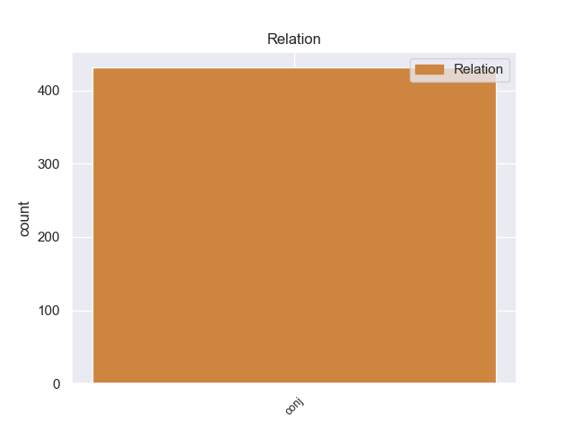
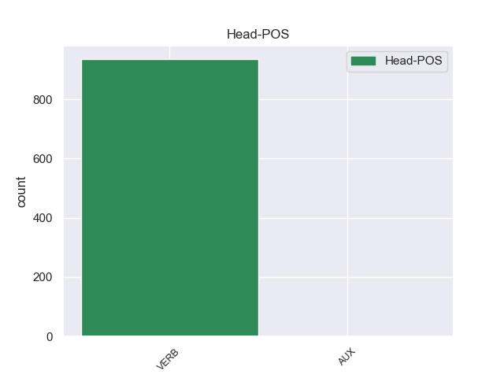
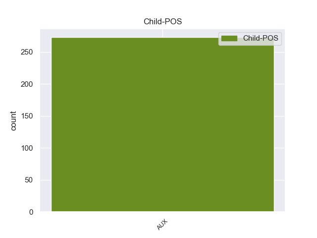

Distribution of features within this leaf



Agreement Rules sorted by frequency.
- When the dependent token is the conjunct(conj) of the head token, and the head token is AUX and the dependent token is AUX.
1 However _ _ _ _ 0 _ _ _
2 , _ _ _ _ 0 _ _ _
3 when _ _ _ _ 0 _ _ _
4 he _ _ _ _ 0 _ _ _
5 printed _ _ _ _ 0 _ _ _
6 out _ _ _ _ 0 _ _ _
7 the _ _ _ _ 0 _ _ _
8 service _ _ _ _ 0 _ _ _
9 quote _ _ _ _ 0 _ _ _
10 , _ _ _ _ 0 _ _ _
11 I _ _ _ _ 0 _ _ _
12 could _ _ _ _ 0 _ _ _
13 see _ _ _ _ 0 _ _ _
14 that _ _ _ _ 0 _ _ _
15 it _ _ _ _ 0 _ _ _
16 was be AUX VBD Mood=Ind|Number=Sing|Person=3|Tense=Past|VerbForm=Fin 0 _ _ _
17 NOT _ _ _ _ 0 _ _ _
18 the _ _ _ _ 0 _ _ _
19 correct _ _ _ _ 0 _ _ _
20 tire _ _ _ _ 0 _ _ _
21 , _ _ _ _ 0 _ _ _
22 and _ _ _ _ 0 _ _ _
23 was be AUX VBD Mood=Ind|Number=Sing|Person=3|Tense=Past|VerbForm=Fin 16 conj 28:cop _
24 not _ _ _ _ 0 _ _ _
25 even _ _ _ _ 0 _ _ _
26 an _ _ _ _ 0 _ _ _
27 appropriate _ _ _ _ 0 _ _ _
28 tire _ _ _ _ 0 _ _ _
29 for _ _ _ _ 0 _ _ _
30 my _ _ _ _ 0 _ _ _
31 car _ _ _ _ 0 _ _ _
32 model _ _ _ _ 0 _ _ _
33 . _ _ _ _ 0 _ _ _
Disagree Examples:
1 These _ _ _ _ 0 _ _ _
2 Shiite _ _ _ _ 0 _ _ _
3 movements _ _ _ _ 0 _ _ _
4 had _ _ _ _ 0 _ _ _
5 been be AUX VBN Tense=Past|VerbForm=Part 0 _ _ _
6 suppressed _ _ _ _ 0 _ _ _
7 by _ _ _ _ 0 _ _ _
8 Saddam _ _ _ _ 0 _ _ _
9 Hussein _ _ _ _ 0 _ _ _
10 's _ _ _ _ 0 _ _ _
11 regime _ _ _ _ 0 _ _ _
12 , _ _ _ _ 0 _ _ _
13 but _ _ _ _ 0 _ _ _
14 have have AUX VBP Mood=Ind|Tense=Pres|VerbForm=Fin 5 conj 16:aux _
15 now _ _ _ _ 0 _ _ _
16 organized _ _ _ _ 0 _ _ _
17 and _ _ _ _ 0 _ _ _
18 armed _ _ _ _ 0 _ _ _
19 themselves _ _ _ _ 0 _ _ _
20 . _ _ _ _ 0 _ _ _
1 Since _ _ _ _ 0 _ _ _
2 September _ _ _ _ 0 _ _ _
3 11 _ _ _ _ 0 _ _ _
4 , _ _ _ _ 0 _ _ _
5 Pakistan _ _ _ _ 0 _ _ _
6 has _ _ _ _ 0 _ _ _
7 been be AUX VBN Tense=Past|VerbForm=Part 0 _ _ _
8 repeatedly _ _ _ _ 0 _ _ _
9 accused _ _ _ _ 0 _ _ _
10 by _ _ _ _ 0 _ _ _
11 Afghan _ _ _ _ 0 _ _ _
12 and _ _ _ _ 0 _ _ _
13 Western _ _ _ _ 0 _ _ _
14 leaders _ _ _ _ 0 _ _ _
15 of _ _ _ _ 0 _ _ _
16 harbouring _ _ _ _ 0 _ _ _
17 Taliban _ _ _ _ 0 _ _ _
18 extremists _ _ _ _ 0 _ _ _
19 who _ _ _ _ 0 _ _ _
20 had _ _ _ _ 0 _ _ _
21 pledged _ _ _ _ 0 _ _ _
22 to _ _ _ _ 0 _ _ _
23 disrupt _ _ _ _ 0 _ _ _
24 the _ _ _ _ 0 _ _ _
25 elections _ _ _ _ 0 _ _ _
26 , _ _ _ _ 0 _ _ _
27 but _ _ _ _ 0 _ _ _
28 at _ _ _ _ 0 _ _ _
29 the _ _ _ _ 0 _ _ _
30 highest _ _ _ _ 0 _ _ _
31 level _ _ _ _ 0 _ _ _
32 the _ _ _ _ 0 _ _ _
33 US _ _ _ _ 0 _ _ _
34 has have AUX VBZ Mood=Ind|Number=Sing|Person=3|Tense=Pres|VerbForm=Fin 7 conj 35:aux _
35 avoided _ _ _ _ 0 _ _ _
36 criticising _ _ _ _ 0 _ _ _
37 President _ _ _ _ 0 _ _ _
38 Pervaiz _ _ _ _ 0 _ _ _
39 Musharraf _ _ _ _ 0 _ _ _
40 on _ _ _ _ 0 _ _ _
41 the _ _ _ _ 0 _ _ _
42 grounds _ _ _ _ 0 _ _ _
43 that _ _ _ _ 0 _ _ _
44 he _ _ _ _ 0 _ _ _
45 is _ _ _ _ 0 _ _ _
46 helping _ _ _ _ 0 _ _ _
47 the _ _ _ _ 0 _ _ _
48 US _ _ _ _ 0 _ _ _
49 catch _ _ _ _ 0 _ _ _
50 Al _ _ _ _ 0 _ _ _
51 Qaeda _ _ _ _ 0 _ _ _
52 elements _ _ _ _ 0 _ _ _
53 inside _ _ _ _ 0 _ _ _
54 Pakistan _ _ _ _ 0 _ _ _
55 . _ _ _ _ 0 _ _ _
1 Or _ _ _ _ 0 _ _ _
2 they _ _ _ _ 0 _ _ _
3 were be AUX VBD Mood=Ind|Tense=Past|VerbForm=Fin 0 _ _ _
4 n't _ _ _ _ 0 _ _ _
5 eyewitnesses _ _ _ _ 0 _ _ _
6 and _ _ _ _ 0 _ _ _
7 are be AUX VBP Mood=Ind|Tense=Pres|VerbForm=Fin 3 conj 9:aux _
8 just _ _ _ _ 0 _ _ _
9 lying _ _ _ _ 0 _ _ _
10 . _ _ _ _ 0 _ _ _
1 . _ _ _ _ 0 _ _ _
2 . _ _ _ _ 0 _ _ _
3 . _ _ _ _ 0 _ _ _
4 Murph _ _ _ _ 0 _ _ _
5 Archibald _ _ _ _ 0 _ _ _
6 is be AUX VBZ Mood=Ind|Number=Sing|Person=3|Tense=Pres|VerbForm=Fin 0 _ _ _
7 Red _ _ _ _ 0 _ _ _
8 Blount _ _ _ _ 0 _ _ _
9 's _ _ _ _ 0 _ _ _
10 nephew _ _ _ _ 0 _ _ _
11 by _ _ _ _ 0 _ _ _
12 marriage _ _ _ _ 0 _ _ _
13 , _ _ _ _ 0 _ _ _
14 and _ _ _ _ 0 _ _ _
15 in _ _ _ _ 0 _ _ _
16 1972 _ _ _ _ 0 _ _ _
17 , _ _ _ _ 0 _ _ _
18 he _ _ _ _ 0 _ _ _
19 was be AUX VBD Mood=Ind|Number=Sing|Person=3|Tense=Past|VerbForm=Fin 6 conj 20:aux _
20 coming _ _ _ _ 0 _ _ _
21 off _ _ _ _ 0 _ _ _
22 a _ _ _ _ 0 _ _ _
23 15 _ _ _ _ 0 _ _ _
24 - _ _ _ _ 0 _ _ _
25 month _ _ _ _ 0 _ _ _
26 tour _ _ _ _ 0 _ _ _
27 in _ _ _ _ 0 _ _ _
28 Vietnam _ _ _ _ 0 _ _ _
29 in _ _ _ _ 0 _ _ _
30 the _ _ _ _ 0 _ _ _
31 infantry _ _ _ _ 0 _ _ _
32 . _ _ _ _ 0 _ _ _
1 Fabio _ _ _ _ 0 _ _ _
2 and _ _ _ _ 0 _ _ _
3 his _ _ _ _ 0 _ _ _
4 friends _ _ _ _ 0 _ _ _
5 were be AUX VBD Mood=Ind|Tense=Past|VerbForm=Fin 0 _ _ _
6 into _ _ _ _ 0 _ _ _
7 the _ _ _ _ 0 _ _ _
8 most _ _ _ _ 0 _ _ _
9 extreme _ _ _ _ 0 _ _ _
10 forms _ _ _ _ 0 _ _ _
11 of _ _ _ _ 0 _ _ _
12 heavy _ _ _ _ 0 _ _ _
13 metal _ _ _ _ 0 _ _ _
14 music _ _ _ _ 0 _ _ _
15 - _ _ _ _ 0 _ _ _
16 death _ _ _ _ 0 _ _ _
17 metal _ _ _ _ 0 _ _ _
18 and _ _ _ _ 0 _ _ _
19 black _ _ _ _ 0 _ _ _
20 metal _ _ _ _ 0 _ _ _
21 , _ _ _ _ 0 _ _ _
22 music _ _ _ _ 0 _ _ _
23 obsessed _ _ _ _ 0 _ _ _
24 with _ _ _ _ 0 _ _ _
25 images _ _ _ _ 0 _ _ _
26 of _ _ _ _ 0 _ _ _
27 murder _ _ _ _ 0 _ _ _
28 and _ _ _ _ 0 _ _ _
29 satanism _ _ _ _ 0 _ _ _
30 - _ _ _ _ 0 _ _ _
31 and _ _ _ _ 0 _ _ _
32 the _ _ _ _ 0 _ _ _
33 role _ _ _ _ 0 _ _ _
34 of _ _ _ _ 0 _ _ _
35 this _ _ _ _ 0 _ _ _
36 music _ _ _ _ 0 _ _ _
37 is be AUX VBZ Mood=Ind|Number=Sing|Person=3|Tense=Pres|VerbForm=Fin 5 conj 38:cop _
38 central _ _ _ _ 0 _ _ _
39 to _ _ _ _ 0 _ _ _
40 the _ _ _ _ 0 _ _ _
41 story _ _ _ _ 0 _ _ _
42 . _ _ _ _ 0 _ _ _